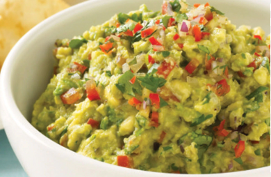

Guacamole

Guacamole is an avocado-based dip, spread, or salad first developed in Mexico. In addition to its use in modern Mexican cuisine, it has become part of international cuisine as a dip, condiment, and salad ingredient
Ingredients
- Ripe avocados
- Lime juice
- Tomato
- Red onion and garlic
- Chilli
- Salt
Steps
- Place the avocado flesh and lime juice in a medium bowl and use a fork to mash until almost smooth
- Add the onion, tomato, garlic, chilli and lime juice and season with salt and pepper. Use a spoon to mix well
- Serve with a squeeze of extra lime juice